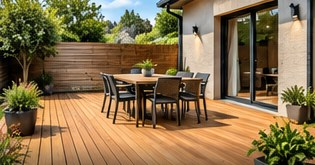
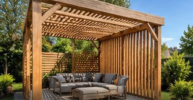
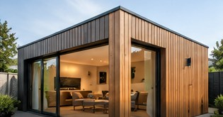
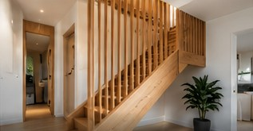

Terrasses en bois
Des espaces extérieurs chaleureux, pratiques et durables.
MENUISERIE & CONSTRUCTION BOIS · GOULVEN (29)
Terrasses, carports, extensions et aménagements bois : une vitrine imaginée pour présenter votre savoir-faire avec élégance.
UN UNIVERS À VOTRE IMAGE
Une présentation claire de vos spécialités, pensée pour rassurer vos futurs clients et faciliter leurs prises de contact.

Des espaces extérieurs chaleureux, pratiques et durables.

Des structures élégantes, pensées pour chaque espace.

De nouvelles possibilités pour valoriser l'habitat.

Des finitions soignées et une approche personnalisée.
Visuels illustratifs générés pour cette proposition. Ils ne représentent pas des chantiers réalisés par NVT Menuiserie.
UNE PRÉSENTATION QUI INSPIRE CONFIANCE
Cette démonstration imagine un site simple et professionnel pour NVT Menuiserie, à Goulven. Les contenus définitifs, coordonnées, photos de réalisations et informations de l'entreprise seraient intégrés uniquement avec son accord.
Découvrir la démarche ↗UNE PROPOSITION SANS ENGAGEMENT
Cette page est une proposition de maquette réalisée par WebÉclat. Elle n'est pas le site officiel de NVT Menuiserie et ne permet pas de demander un devis de menuiserie.
Contacter WebÉclat ↗